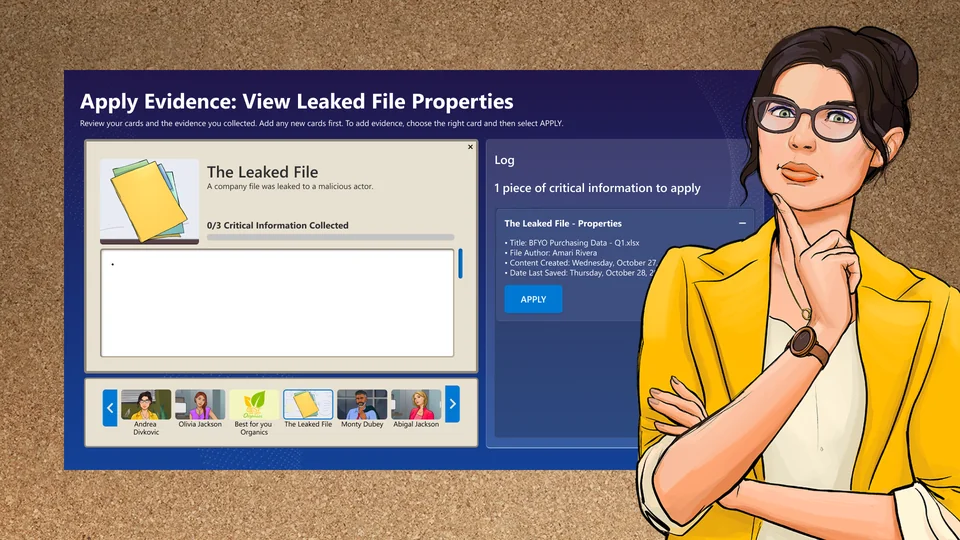
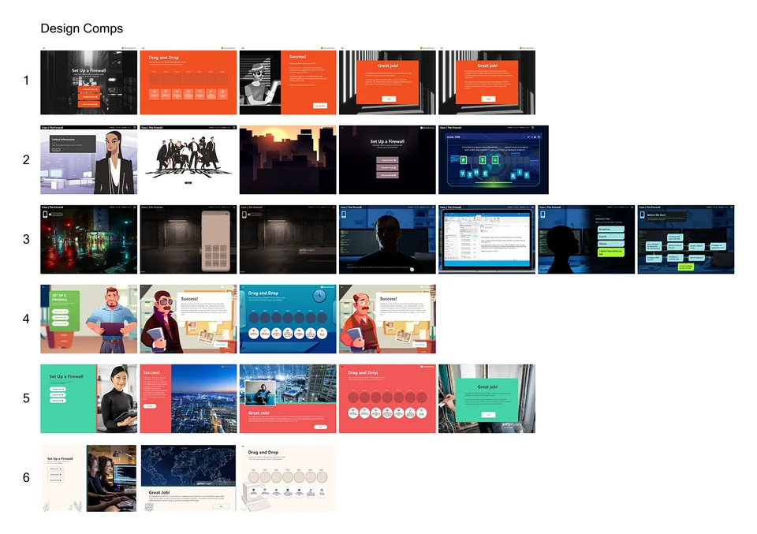

Learning cybersecurity
by solving a mystery.
I translated a complex cybersecurity learning experience into connected prototypes, reusable interaction patterns, and a consistent interface for Microsoft Learn Cloud Games.

The challenge: making technical learning hands-on
Who Hacked? is a cybersecurity simulation in Microsoft Learn’s Cloud Games initiative. Teams of three investigate a fictional ransomware breach, practicing with Microsoft tools in a safe environment while taking on different security roles.
Our challenge was to connect the technical exercises, player decisions, and investigation story into an experience that made sense from beginning to end.
My contribution: making the experience tangible
I built a demo prototype connecting more than 60 screens, combining cinematic visuals with interactive click-through sequences. It helped stakeholders explore the proposed experience before development.
As the detective concept took shape, we mapped learning objectives such as log analysis and identity remediation into narrative checkpoints. I prototyped low-fidelity flows to test the journey internally and refine how players moved between story, evidence, and technical challenges.
Patterns that support the investigation
I created the style guide and page patterns for recurring interactions: assigning roles, reviewing evidence, and choosing remediation actions. Figma prototypes communicated those flows to stakeholders and developers.
I collaborated with project managers, an art director, game and learning experience designers, and developers. While the learning team scripted the scenario, my focus was giving its decisions and activities a consistent interface.

Explore the complete process and original artifacts in the original case study ↗.
Back to selected work ↗